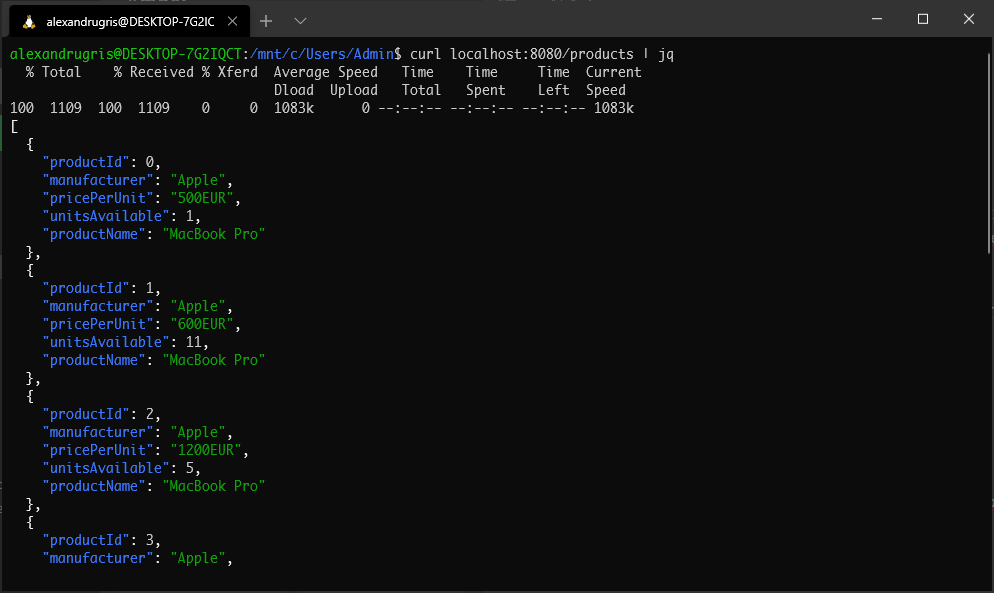
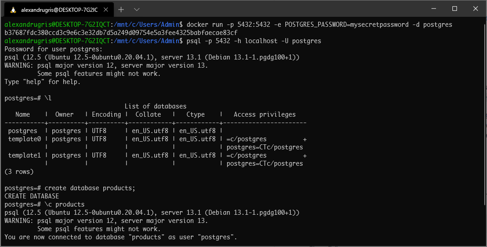

First Steps In Go - Web Services
These are my first steps in Go, this time learning how to build web services. The post touches handling requests, json serialization, middleware, logging, database access and concurrency. Websockets and templates will be covered in a future post.
Listening to Incoming Requests
For building HTTP services, golang comes with all batteries included. There's no need to install any additional package, everything is already available in the standard library. The APIs are straight forward and the code is short and fast.
package main
import (
"log"
"net/http"
)
func customEndpoint(w http.ResponseWriter, r *http.Request) {
w.Write([]bytes("Hello World"))
log.Println("Served.")
}
func main() {
// a /custom endpoint
http.HandleFunc("/custom", customEndpoint)
// listen on localhost, port :8080
if err := http.ListenAndServe(":8080", nil); err != nil {
log.Fatal(err)
}
}
Handling JSON
If we want to export a field from a structure to JSON, its name has to start with a capital letter, making it a public symbol. Otherwise it will be considered as private and it will not appear in the output string.
We use annotations, which are accessible at runtime through reflection, to specify how the field will be serialized. There is no space between json, : and the name. If we skip the annotation, the structure will be serialized with its fields as JSON fields.
import "encoding/json"
type Product struct {
ProductID int `json:"productId"`
Manufacturer string `json:"manufacturer"`
PricePerUnit string `json:"pricePerUnit"`
UnitsAvailable int `json:"unitsAvailable"`
ProductName string `json:"productName"`
}
To serialize JSON we do the following:
if bytes, err := json.Marshal(&Product{
ProductID: 0,
Manufacturer: "Apple",
PricePerUnit: "2500EUR",
UnitsAvailable: 15,
ProductName: "MacBook Pro",
}); err == nil {
log.Println("Successfully serialized to JSON")
} else {
log.Println("Failed to serialize object")
}
To deserialize, the following:
product := Product{}
err = json.Unmarshal(serializedJSONString, &product)
if err != nil {
log.Println("Could not unmarshal")
}
Handling of HTTP Verbs
A simple WebService, handling the GET method, returning a list of products from an in-memory structure.
package main
import (
"encoding/json"
"fmt"
"log"
"math/rand"
"net/http"
)
// Product type
type Product struct {
ProductID int `json:"productId"`
Manufacturer string `json:"manufacturer"`
PricePerUnit string `json:"pricePerUnit"`
UnitsAvailable int `json:"unitsAvailable"`
ProductName string `json:"productName"`
}
// some products stored in memory to play a bit
var products []*Product
// endpoint handler
func productsHandler(w http.ResponseWriter, r *http.Request) {
switch r.Method {
// handling the GET verb
case http.MethodGet:
jsonStr, err := json.Marshal(products)
if err != nil {
log.Println(err)
w.WriteHeader(http.StatusInternalServerError)
} else {
w.Header().Set("Content-Type", "application/json")
w.Write([]byte(jsonStr))
}
// everything else, not impemented
default:
w.WriteHeader(http.StatusNotImplemented)
}
}
func main() {
// init a few products in memory
products = []*Product{}
for i := 0; i < 10; i++ {
products = append(products, &Product{
ProductID: i,
Manufacturer: "Apple",
PricePerUnit: fmt.Sprintf("%vEUR", (rand.Int()%10)*100+500),
UnitsAvailable: rand.Int() % 15,
ProductName: "MacBook Pro",
})
}
// handler
http.HandleFunc("/products", productsHandler)
if err := http.ListenAndServe(":8080", nil); err != nil {
log.Fatal(err)
}
}
And the output:

To create a new product, we update the switch block from above with the following:
case http.MethodPost:
body, err := ioutil.ReadAll(
&io.LimitedReader{ // ensure we don't get DoS
R: r.Body,
N: 1024})
if err != nil {
log.Println(err)
w.WriteHeader(http.StatusBadRequest)
return
}
product := Product{}
err = json.Unmarshal(body, &product)
if err != nil || product.ProductID != 0 {
if err == nil {
err = errors.New("ProductID should be 0 - if you know the ID, use PUT")
}
log.Println(err)
w.WriteHeader(http.StatusBadRequest)
return
}
// give them an increment
// for now assume products are in incremental order, sorted
// ensure safe to this data structure
mtx.Lock()
defer mtx.Unlock()
if len(products) > 0 {
product.ProductID = products[len(products)-1].ProductID + 1
}
products = append(products, &product)
w.Header().Set("Location", fmt.Sprintf("/products/%v", product.ProductID))
w.WriteHeader(http.StatusCreated)
To test the service we just do
$curl -D - -X POST -H "Content-Type: application/json" -d '{"productId" : 0, "manufacturer": "Microsoft", "productName": "MS Surface"}' localhost:8080/products
And we get the expected response back
HTTP/1.1 201 Created
Date: Sat, 16 Jan 2021 09:09:20 GMT
Content-Length: 0
What we are going to do now is to implement GET for a specific product ID and PUT for updating a specific ID.
To do this, we need a new handler which we add to the main function. This will match the trailing /.
// handler for GET id and PUT id
http.HandleFunc("/products/", productHandler)
The URLs that will go to this handler take the form http://localhost:8080/products/id. We are also going to structure a bit better the handler, so the error handling is factored out of the main function.
func productHandler(w http.ResponseWriter, r *http.Request) {
retCode := func(w http.ResponseWriter, r *http.Request) int {
pathSegments := strings.Split(r.URL.Path, "/products/")
if len(pathSegments) != 2 {
return http.StatusBadRequest
}
productID, err := strconv.Atoi(pathSegments[len(pathSegments)-1])
if err != nil {
return http.StatusBadRequest
}
product := findProductByID(productID)
if product == nil {
return http.StatusNotFound
}
switch r.Method {
case http.MethodGet:
mtx.RLock()
defer mtx.RUnlock()
jsonStr, err := json.Marshal(product)
if err != nil {
return http.StatusInternalServerError
}
w.Header().Set("Content-Type", "application/json")
w.Write([]byte(jsonStr))
return http.StatusOK
case http.MethodPut:
mtx.Lock()
defer mtx.Unlock()
body, err := ioutil.ReadAll(
&io.LimitedReader{
R: r.Body,
N: 1024})
if err != nil || json.Unmarshal(body, &product) != nil {
return http.StatusBadRequest
}
// ensure ID stays the same
product.ProductID = productID
return http.StatusAccepted
default:
return http.StatusMethodNotAllowed
}
}(w, r)
log.Println(r.Method, r.URL.Path)
w.WriteHeader(retCode)
}
Since we store the products in an array in memory, the find function is as simple as it gets.
var mtx sync.RWMutex
func findProductByID(id int) *Product {
mtx.RLock()
defer mtx.RUnlock()
for _, p := range products {
if p != nil && p.ProductID == id {
return p
}
}
return nil
}
We can test our code easily from the command line invoking
$curl -D - -X GET http://localhost:8080/products/2
and
$curl -D - -X PUT -H "Content-Type: application/json" -d '{"productId": 0, "manufacturer": "Microsoft", "productName": "MS Surface"}' localhost:8080/products/2
Adding Middlewares - CORS Example
The http package allows for easy addition of middleware. Such middleware can do things like authentication, caching (memoizing), logging or session management. For this example, we will modify our code to add a CORS middleware.
func corsMiddleware(handler http.Handler) http.Handler {
return http.HandlerFunc(func(w http.ResponseWriter, r *http.Request) {
// before the handler
// add the cors middleware headers
w.Header().Set("Access-Control-Allow-Origin","*")
w.Header().Set("Access-Control-Allow-Methods","POST, GET, OPTIONS, PUT, DELETE")
w.Header().Set("Access-Control-Allow-Headers","Accept, Content-Type, Content-Length")
w.Header().Set("Content-Type", "application/json")
if r.Method == http.MethodOptions {
// the pre-flight request, make sure it is handled
return
}
// the actual handler
handler.ServeHTTP(w, r)
// after handler
})
}
func main() {
// handler for GET all and POST
http.Handle("/products", corsMiddleware(http.HandlerFunc(productsHandler)))
// handler for GET id and PUT
http.Handle("/products/", corsMiddleware(http.HandlerFunc(productHandler)))
if err := http.ListenAndServe(":8080", nil); err != nil {
log.Fatal(err)
}
}
The full code, refactored with persitence in an in-memory map can be found here
Database Access
First thing, we are going to install Postgres. Assuming docker is installed and running, we do
$docker run -p 5432:5432 -e POSTGRES_PASSWORD=mysecretpassword -d postgres
Now I am running the Postgres server portmapped on 5432, with usename posgres having the password mysecretpassword
To connect to the server we do
$psql -p 5432 -h localhost -U postgres
In the screenshot below, I have also created a database called products and connected to it using the \c command

The next thing to do is to get the Postgres Go driver.
$go get github.com/lib/pq
At the time of this writing, the recommended database driver for go is pgx. Its authors recommend to use its own API instead of the standard go SQL package due to higher performance in most Postgres-specific scenarios. For the purpose of this demo we will use the standard SQL package though, as it is portable across databases.
In a production scenario we'd also be using an external connection pooler, the recommended solution being pgbouncer. This is because for each new connection to the database server pgsql launches a new Postgres database backend, a new system process, with its launching system heavy and memory intensive.
Let's dive into the code.
First step is to blank import the driver into our main.go file. That is because drivers need to register themselves with the SQL package in their init function(https://golang.org/doc/effective_go.html#init)
import _ "github.com/lib/pq"
The next step is to declare a database connection pool and open it. The names are exported hence capitalized.
package database
import (
"database/sql"
"log"
)
// DbConn is our database connection pool
var DbConn *sql.DB
// Connect opens the connection to the database
func Connect() {
var err error
DbConn, err = sql.Open(
"postgres",
"user=pqgotest dbname=products sslmode=verify-full password=mysecretpassword"
)
if err != nil {
log.Fatal(err)
}
}
We are going to create the Products table and seed our database, but only if a --dbinit flag is sent to our executable. We add to our main function the following:
for _, v := range os.Args[1:] {
switch v {
case "--dbinit":
if err := database.Init(); err != nil {
log.Fatal(err)
}
}
}
To create our database, we are going to play a bit with reflection and automatically discover the fields from our Product type. This discovery by reflection is something that all ORMs do. Since we are not going to build our own ORM here, this is the only place where we will play with reflection.
func Init() error {
if DbConn == nil {
errors.New("Database not opened")
}
query := "CREATE TABLE IF NOT EXISTS Products ("
t := reflect.TypeOf(product.Product{})
for i := 0; i < t.NumField(); i++ {
f := t.Field(i)
query += f.Name + " "
switch f.Type.Name() {
case "string":
query += "varchar (100)"
default:
query += f.Type.Name()
}
if i+1 < t.NumField() {
query += ", "
}
}
query += ");"
log.Println(query)
if _, err := DbConn.Exec(query); err != nil {
return err
}
if _, err := DbConn.Exec("DELETE FROM Products"); err != nil {
return err
}
if _, err := DbConn.Exec("ALTER TABLE Products ADD PRIMARY KEY (ProductID)"); err != nil {
return err
}
if _, err := DbConn.Exec(
`CREATE SEQUENCE IF NOT EXISTS pk_product
CACHE 100 OWNED BY Product.ProductID`); err != nil {
return err
}
return nil
}
The next step is to implement the full product.Map interface and switch from an in-memory map to database calls. A better name would have been product.Repository but we will not refactor the code now. The full code can be found here and we are only going to exemplify in this blogpost how to create a new product.
func (m *mapInternal) CreateNew(p *Product) {
stmt, err := database.DbConn.Prepare(`INSERT INTO
Products(Manufacturer, PricePerUnit, UnitsAvailable, ProductName, ProductID)
VALUES ($1, $2, $3, $4, nextval('pk_product')) RETURNING ProductID`)
if stmt == nil || err != nil {
log.Fatal(err)
}
sqlRow := stmt.QueryRow(p.Manufacturer, p.PricePerUnit, p.UnitsAvailable, p.ProductName)
if err := sqlRow.Scan(&p.ProductID); err != nil {
log.Fatal(err)
}
}
The full source code for this implementation can be found here.
Contexts
If we want to setup a timeout for a query, golang provides the Context mechanism. Each database function has a Context method. The call to cancel() when the operation is completed successfully allows to end the context and release all associated resources.
An example below:
func (m *mapInternal) GetAll() []*Product {
// this will allow the queries to timeout
ctx, cancel := context.WithTimeout(context.Background(), 15*time.Second)
defer cancel()
results, err := database.DbConn.QueryContext(ctx, `
SELECT
ProductID,
Manufacturer,
PricePerUnit,
UnitsAvailable,
ProductName
FROM Products
`)
if err != nil {
log.Println(err)
return nil
}
defer results.Close()
ret := make([]*Product, 0, 100)
for results.Next() {
v := Product{}
results.Scan(
&v.ProductID,
&v.Manufacturer,
&v.PricePerUnit,
&v.UnitsAvailable,
&v.ProductName)
ret = append(ret, &v)
}
return ret
}